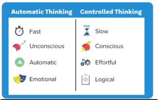
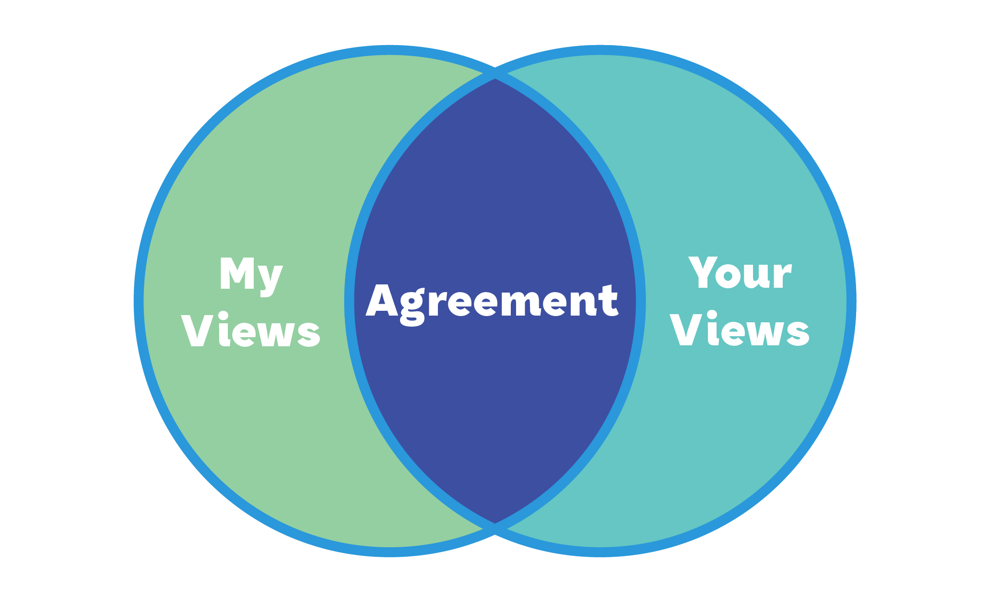
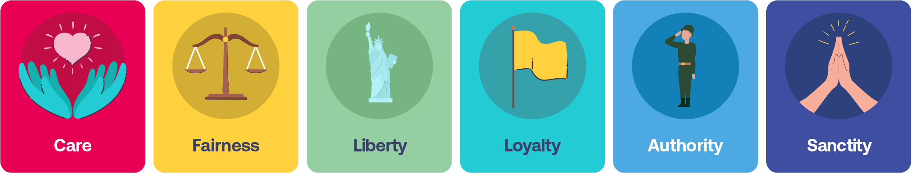
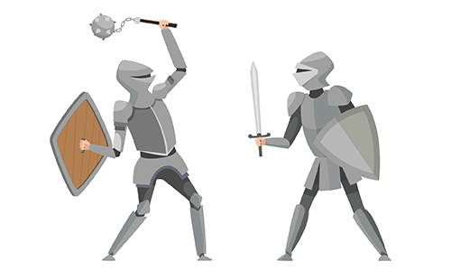
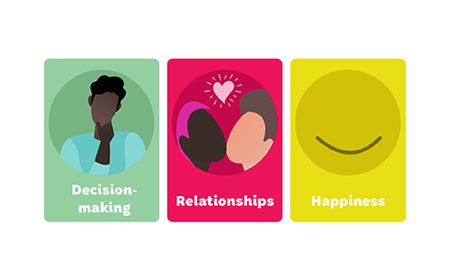
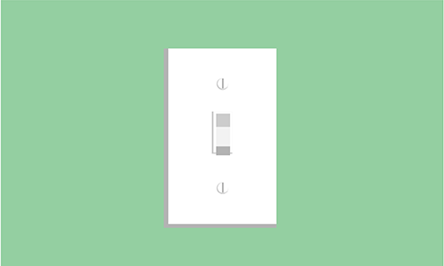
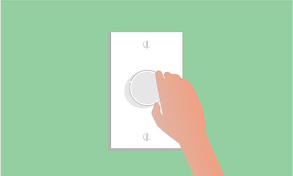
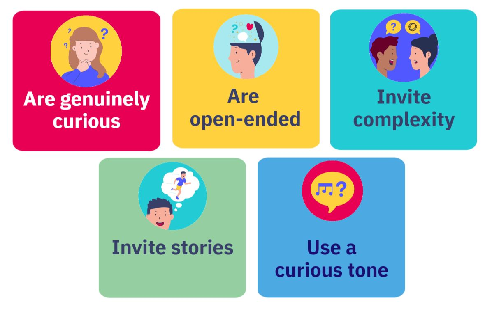
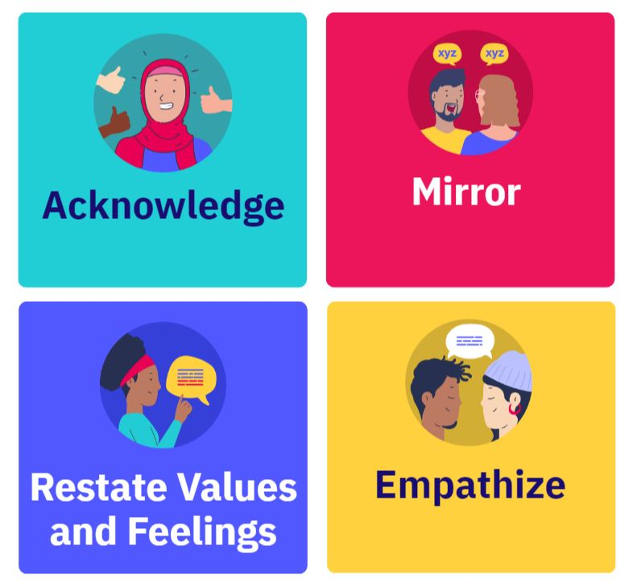

1 Lesson 1 : Diviened Mind
1.1 고대의 뇌
과거 인간의 생존은 본능의 속도가 결정했다. 즉 우리의 뇌는 정보를 매우 빠르게 처리하는 방법인 ’short cut’을 개발하였고 우리는 현대에 와서도 여전히 이 ’short cut’을 사용한다. 하지만 이것은 우리의 추론과 의사결정의 과정에서는 실수를 유발하는 부정적이 요소가 될 수 있다.
1.2 Our Divided Minds
우리의 뇌는 automatic과 controlled 두 작동 방법으로 나누어져 있다.
automatic은 감정과 직관에 의해 작동되고
controlled는 의식과 분석에 의해 작동된다

1.3 코끼리와 라이더
라이더는 controlled thinking, 통제된 사고 코끼리는 automatic thinking, 직관적 사고에 비유된다
1.4 직관이 먼저인가 추론이 먼저인가.
우리는 사고의 과정에서 추론과 직관의 순서를 헷갈려한다.
우리는 대부분의 상황에서 신중하게 숙고한 끝에 어떠한 결정에 도달한 것 같은 착각을 한다
즉 코끼리가 결정한 것을 우리는 라이더가 결정을 했다고 한다.
우리의 의식은 직관이 먼저고 사후적으로 합리화한다.
우리의 직관은 막연하게 부정적인 것이 아니다 직관은 필요하지만 가끔 우리를 헷갈리게 한다.
예시1 - cognitive biases 인지 편향: 경험과 비논리적 추론에 의존한 잘못된 판단
예시2 - Confirmation Bias 확증 편향: 신념과 일치하는 부분의 정보만 수용하고 반대의 경우는 거부한다..
1.5 확증편향 판단하기
Step 1. 코끼리가 폭주하고 있는지 판단 특정 표현을 조심해라 ex) 모두가 그렇게 생각해, 무조건 옳아
Step 2. 다른 관점 생각하기 ex) 내 결론에 예외가 있을까?, 이것을 다른 방식으로 생각할 수 있을까?
1.6 Lesson 1 Recap
우리의 뇌에는 두 가지 사고 체계가 있습니다: 자동적인 사고와 통제된 사고.
우리의 추론은 종종 그 반대가 아니라 우리의 직관을 따릅니다.
우리는 우리의 추론에서 일관된 오류를 범하기 쉽고, 종종 그것을 알지 못합니다.
이러한 실수는 우리가 사실을 해석하는 방식을 형성할 수 있고 겉보기에는 다루기 힘든 의견 차이를 초래할 수 있습니다.
2 Lesson 2: Us and Them
2.1 인식의 차이
우리는 다른 사람들이 믿는 것에 대해 왜곡된 인식을 갖는 경향이 있다. 이러한 인식의 차이가 존재하는 이유는 크게 두가지가 있다.
- Echo-chambers: 우리는 자신과 비슷한 생각을 가진 사람들끼리 그룹을 형성하여 자가격리되는 경향이 있다. 이는 일생생활에서 우리가 다양한 관점의 의견을 들을 가능성을 낮춘다
- Extreme views are loudest: 우리는 다른 관점들에 노출될 때 그들중 가장 극단적인 것을 듣는 경향이 있다. 다양한 미디어에서 극단적인 견해는 더 광범위하게 퍼져나가고 클릭수도 어마어마하다.
2.2 Exhausted Majority.
조사에 따르면 미국인의 67%가 이러한 인식에 차이로 인한 사회 분열에 지쳤으며 공통점을 찾기 위해 노력하고 싶어한다는 것이 밝혀졌다. 이들을 ‘exhausred majority’ 라고 불린다.

2.3 6가지 도덕적 기준
맛에도 5종류로 나눠지듯이 도덕 기준도 6가지로 나누어진다. 이 기준들은 도덕적 기초라고 한다.
사람마다 도덕적 기준의 우선순위가 다르다.

care - 타인을 배려하고 친절과 연민의 가치를 높게둠
fairness - 공정한 대우를 중요시하고 부정행위를 반대함
liberty - 자유, 열망, 스스로 결정할 수 있는 결정권을 중요시함
loyalty - 우리가 속한 가족 ,학교, 지역, 국적에 대한 깊은 관계를 중요시함
authority - 전통, 법, 지도자등의 권위를 중요시함
sanctity - 사람의 가치나 인권을 신성시하며 이것들을 모독하는 것을 잘못된 것이라고 생각함
이러한 도덕적 기준은 직관을 뜻하는 코끼리의 렌즈로 비유된다. 즉 우리의 직관은 우리가 각각 가지고 있는 특정한 도덕적 기준을 토대로 형성되었다.
사람마다 다른 도덕 기준을 가지고 있다는 것을 알고 다양한 관점의 의견을 들어보고 인식의 차이를 인정해야 한다.
3 Lesson 3: Get Curious
우리는 종종 자신이 믿고 있는 특정 가치의 관점이 유일하게 맞는 것이라고 느낀다.
그 결과 우리는 마치 전투를 치루는 것 처럼 우리가 옳다는 것을 증명하려고 상대를 이기려고 하는 것에 집중한다.

이렇게 우리가 전투적으로 대화를 치룰 다음과 같은 결과를 초래한다.
- 상대방의 입장을 더 방어적으로 대한다.
- 상대방은 위협,모욕을 느끼거나 기분이 상할 수 있다.
- 상대방과의 관계가 손상된다
- 비록 전투에서 승리했다 하더라도 얻는 것이 거의 없다. 오히려 많은 것을 잃을 수 있다.
3.1 The Illusion of Explanatory Depth
우리는 우리가 알고 있는 것보다 더 많은 것을 알고 있다고 착각하는 경향이 있다.
이 현상은 ’The Illusion of Explanatory Depth’라고 불린다.
우리는 문제에 대해 그렇게 많이 알지 못한 채로 강한 감정에 휘둘린다. 또한 이 사실을 문제에 대해 자세한 이야기하려고 시도할 때 우리가 ‘The Illusion of Explanatory Depth’ 에 빠졌다는 것을 알 수 있다.
이는 매우 창피하고 불편하게 느껴질 수 있지만 이것을 받아들이는 것은 매우 효과적이다.
3.2 Intellectual Humility
우리가 틀릴 가능성을 인정하는 것은 지적 겸손이라고 불린다. 이러한 지적 겸손을 갖추게 되면 많은 이점을 얻을 수 있다.

의사 결정, 관계, 행복
##Belief Updating

우리는 우리의 신념을 100% 확신하는 이진법적인 사고를 가지고 있다.
즉 각 주제에 대해 100% 옳은 것, 무조건 틀린 것이라고 극단적으로 판단하는 경향이 있다.
우리는 이것을 고치고 60% 정도 맞다. 혹은 70%정도 맞다고 생각한다 등 유연하게 판단하는 사고가 필요하다

3.3 탐험가정신
지적 겸손을 수용하고 상대방을 물리치려하는 전사의 정신이 아니라 상대방을 이해하는 탐험가 정신이 필요하다.
탐험가 정신으로 대화에 들어간다면 상대방도 당신에 대해 개방성과 호기심으로 보답할 가능성이 높아진다
3.4 건설적인 질문

호기심있는 질문, 열린 질문, 복잡성을 불러일으키는 질문, 이야기를 만드는 질문, 호기심 가득한 톤
4 Lesson 4: storytelling
우리의 직관은 우리의 믿음을 형성하는데 중요한 역할을 한다.
따라서 우리는 누군가의 감정과 직관을 다뤄야 하는데 이에 스토리텔링은 가장 효과적인 방법이다.
스토리텔링은 답답한 의견 대립를 건설적인 의견대립 의사소통으로 바꾸는 강력한 도구이다
이야기에 있어서 솔직(honest), 중요(important), 요점(to the point) 이 세가지 기준에 유의하여 스토리텔링을 하면 더 효과적이다.
4.1 간접경험 스토리
우리가 직접적으로 경험하지 않고 간접적은 얻은 스토리도 상대방의 감정을 자극하는데 효과적이다.
4.2 스토리에 반응
이야기에 귀를 기울리는 것은 매우 중요하다. 실제로 듣는 시간을 가질 떄 우리는 상대방에게 이해와 연결의 가능성을 열어 줄 수 있다. 상대방의 이야기를 효과적으로 듣는 방법이 4가지가 있다.
